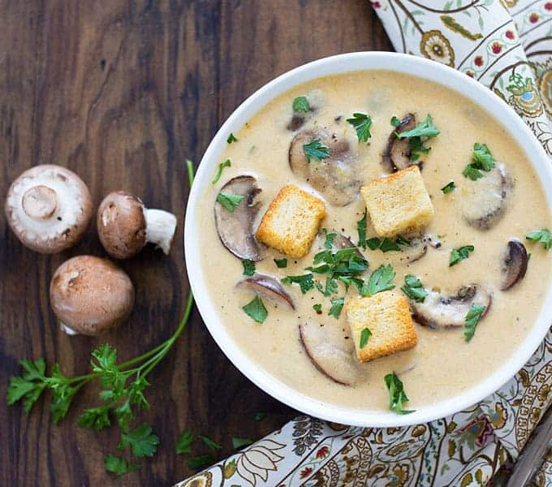

Creamy Mushroom Cheddar Soup

This soup does NOT skimp on the mushrooms!
If you`re a mushroom lover and love them like I do - you are really like this receipt
What we need to have:
- 2 ½ tablespoons Horizon unsalted butter
- 1 (16 ounce) package baby bella mushrooms, sliced
- ⅓ cup sliced green onions (white and light green parts only)
- 2 tablespoons all-purpose flour
- 2 cups Horizon whole milk
- 2 cups chicken broth
- 1 bay leaf
- 1 ½ cups Horizon shredded cheddar cheese
- Chopped fresh parsley and garlic croutons, for garnish (optional)
How to cook:
- In a large saucepan over medium-high heat, melt butter. Add mushrooms and green onions and saute until tender, about 4-5 minutes.
- Add flour and stir well. Slowly add milk and chicken broth, stirring well to combine.
- Add bay leaf and bring to a simmer, stirring constantly.
- Reduce heat to low and simmer until thick, stirring occasionally, about 20-25 minutes.
- Gradually add cheese and stir until melted. Remove and discard bay leaf.
- Top with parsley and croutons, if desired.
Back to the main page